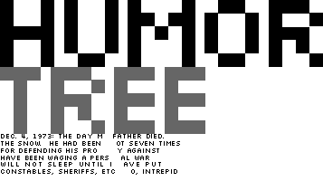

Here is the original version of the story under the Humor Tree logo:
 This story could not possibly be true. My father is not dead. If he had died in 1973, I would not be here. I was born in 1981. Local law enforcement officers got wind of this site, and read that, and considered taking legal action against me. They have not yet, but that is why it is censored. Apparently, they did not like the call to arms and the order to "burn your local police station". Incidentally, this site was also kept out of a student art competition in the Spring of 2000 at the Longview Museum of Fine Arts. The administration of Longview High School and the Longview Independent School District felt that it was too inflammatory.